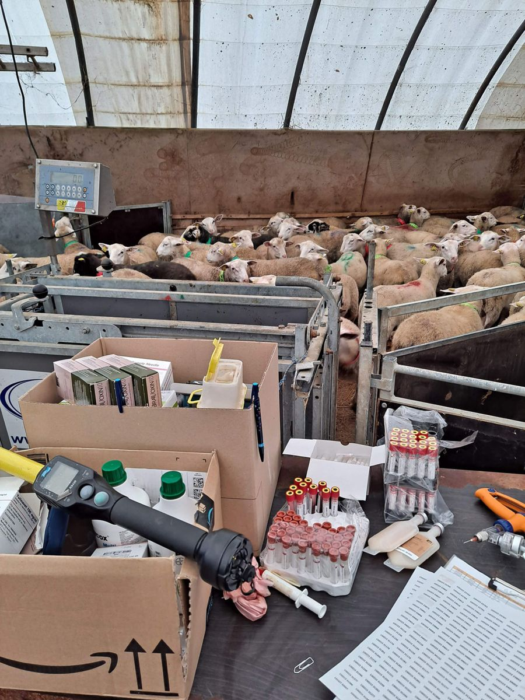
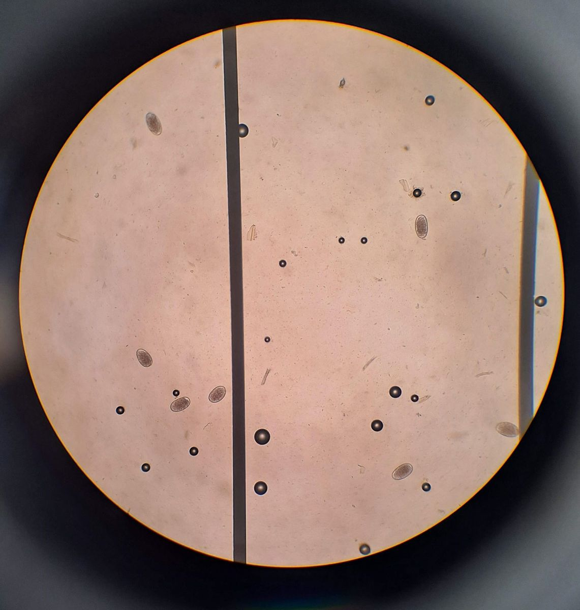

Les stations de contrôle individuel
Où et comment les béliers Romane sont évalués
Deux stations de contrôle individuel (SCI) évaluent les béliers Romane : une dans l'Aude, aux Brunels, et une dans le Cher, sur le site de l'INRAe la Sapinière.
Chaque année, près de 500 béliers sont évalués. Venant d'une vingtaine d'élevages différents, ils sont tous placés dans les mêmes conditions afin d'annuler l'effet milieu, avec la même alimentation et le même environnement.
L'évaluation dure 70 jours, temps nécessaire pour extérioriser les aptitudes bouchères et ainsi les comparer. Les agneaux sont comparés au sein d'une même bande, et chaque bande doit comprendre un minimum de 50 béliers.

Les étapes de l'évaluation
Le tri avant l'évaluation
Un premier tri génétique est effectué sur les critères de PAT, de qualités maternelles, de qualification des mères et de génotypage tremblante. Les agneaux sont issus en grande majorité de mères à bélier (MB) et de béliers d'insémination, et doivent être nés dans une même période de 3 semaines. Les techniciens de l'OS passent ensuite en ferme choisir les meilleurs individus d'un point de vue phénotypique : développement homogène, bons aplombs, bonne rectitude de dos, pas de souci aux dents ou aux testicules.
La phase d'adaptation
À l'arrivée en station, les jeunes béliers sont pesés, l'identification de chacun est vérifiée, un numéro de travail est attribué, et les vaccins et prises de sang nécessaires sont effectués. Durant 15 jours, ils s'habituent à leur nouveau milieu et à une alimentation élevée, avec un concentré distribué à volonté.
La phase de contrôle
Elle dure 8 semaines, durant lesquelles l'aliment est distribué à volonté, afin d'avoir un niveau de croissance élevé et que les béliers puissent exprimer tout leur potentiel. Ils sont manipulés à trois occasions : début de contrôle (double pesée, avec 24 h d'intervalle), mi-contrôle (simple pesée + 1re échographie dorsale) et fin de contrôle (double pesée + 2e échographie). L'échographie dorsale mesure l'épaisseur du gras dorsal et celle du muscle de la noix côtelette. Ce travail est réalisé par un technicien mandaté par l'Institut de l'Élevage.
Le pointage
Une fois l'évaluation terminée, chaque bélier est pointé pour évaluer sa conformation, toujours au sein de la même bande. Des éleveurs, techniciens d'OP ou d'OS le caractérisent par 3 notes : dos, épaules et gigots. Une grande attention est portée à tous les critères de longévité fonctionnelle : rectitude du dos, qualité des aplombs, dents, testicules. Les animaux non conformes aux critères indispensables à une carrière en élevage sont réformés.
Le tri final
Chaque bélier obtient un index de synthèse de SCI, basé sur 4 index calculés à la suite de l'évaluation : croissance, PAT, gras et morphologie. Les meilleurs vont au centre d'insémination, afin de continuer à améliorer la race. Les autres sont attribués par l'OS aux sélectionneurs, aux multiplicateurs et aux utilisateurs. Une partie peut aussi partir à l'étranger. Tous les animaux non conformes pour être de bons reproducteurs sont éliminés.
Des nouveautés sur les béliers de SCI
Depuis 2023, les béliers d'insémination sont évalués sur leur résistance au parasitisme à la suite du protocole SCI. À l'INRAe de la Sapinière, les béliers sont également évalués sur leur efficacité alimentaire au niveau des concentrés.
Ci-contre : l'observation des œufs de strongles au microscope. Les œufs sont les formes ovales remplies de gris ; il y en a 7 ici.
